고장사례 및 검색 › 현대 그랜저 IG 2.4 (2019년형)
인천 등속조인트 교환 — 현대 그랜저 IG 2.4 20만 km, 드라이브샤프트 좌 · 우 동시 교환
- 차량
- 현대 그랜저 IG 2.4 (2019년형) · 207,431 km
- 증상
- 현대 그랜저 IG 2.4 가솔린, 주행거리는 207,431 km였습니다. 드라이브샤프트(등속조인트)를 좌 · 우 함께 교환한 차량입니다
- 원인
- 등속조인트는 미션에서 나온 힘을 바퀴로 보내는 축입니다. 앞바퀴 굴림차는 이 축이 바퀴와 함께 위아래로 움직이고, 핸들을 돌리면 좌우로도 꺾입니다. 꺾인 상태에서도 힘이 끊기지 않게 하려고 축 양 끝에 조인트가 들어가 있고, 그 조인트를 고무 부트가 감싸 그리스를 가둬 둡니다.
그래서 이 부품의 수명은 대개 고무가 결정합니다. 부트가 갈라지면 그리스가 빠져나가고 그 자리로 먼지와 물이 들어갑니다. 그 상태로 계속 타면 조인트 안쪽이 마르면서 소리가 나기 시작합니다.
이 차는 주행거리가 207,431 km입니다. 여기서 손님들이 가장 많이 물어보시는 것이 「한쪽만 갈면 안 되냐」는 것입니다.
한쪽만 가는 것도 됩니다. 다만 한 가지는 생각해 보셔야 합니다. 좌우 두 축은 같은 날 만들어져, 같은 거리를, 같은 환경에서 달렸습니다. 한쪽 고무가 수명을 다했으면 반대쪽도 대개 비슷한 상태입니다. 지금 한쪽만 갈고 몇 달 뒤에 반대쪽을 갈면, 차를 올리고 바퀴를 떼고 하체를 여는 그 과정을 두 번 하게 됩니다.
이 차는 좌 · 우를 함께 갈았습니다. 사진에 네 개가 나란히 놓여 있습니다. 녹슨 톤휠이 달린 둘이 떼어낸 것이고, 나머지 둘이 신품입니다.
작업 순서는 이렇습니다. 바퀴를 떼고, 허브 가운데의 축 고정 너트를 풀고, 로어암 볼조인트를 분리해 허브를 바깥으로 젖힌 다음, 축을 미션에서 뽑아냅니다.
이 작업에서 가장 신경 쓰는 자리는 미션 쪽입니다. 축을 뽑으면 그 자리에 오일씰이 드러납니다. 뽑는 과정에서 씰이 상하지 않게 하는 것, 그리고 신품을 다시 넣을 때 씰 입술을 말아 넣지 않는 것. 여기가 잘못되면 며칠 뒤 그 자리에서 미션오일이 새기 시작합니다. 등속을 갈고 나서 바닥에 기름이 떨어진다며 다시 오시는 경우가 대개 여기서 나옵니다.
20만 km를 넘긴 차입니다. 고무로 된 부품은 주행거리보다 시간과 열에 더 영향을 받습니다. 하체를 열 일이 생기면 주변 고무 부품도 한 번씩 같이 보시는 편이 낫습니다. - 수리내역
- 리프트 상승 후 하부 확인 · 앞바퀴 탈거 · 허브 축 고정 너트 해제 · 로어암 볼조인트 분리 · 드라이브샤프트 탈거 — 좌 · 우 · 미션 측 오일씰 자리 확인 · 신품 드라이브샤프트 장착 — 좌 · 우 · 로어암 볼조인트 · 허브 축 너트 체결 · 바퀴 장착 및 체결 토크 확인 · 시운전 후 소음 · 누유 재점검
- 교환부품
- 드라이브샤프트(등속조인트) 좌 · 우
정비 사진 13장
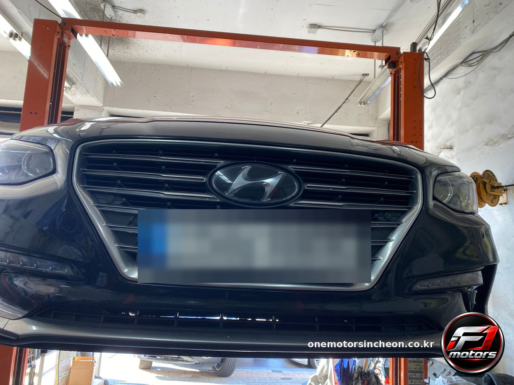
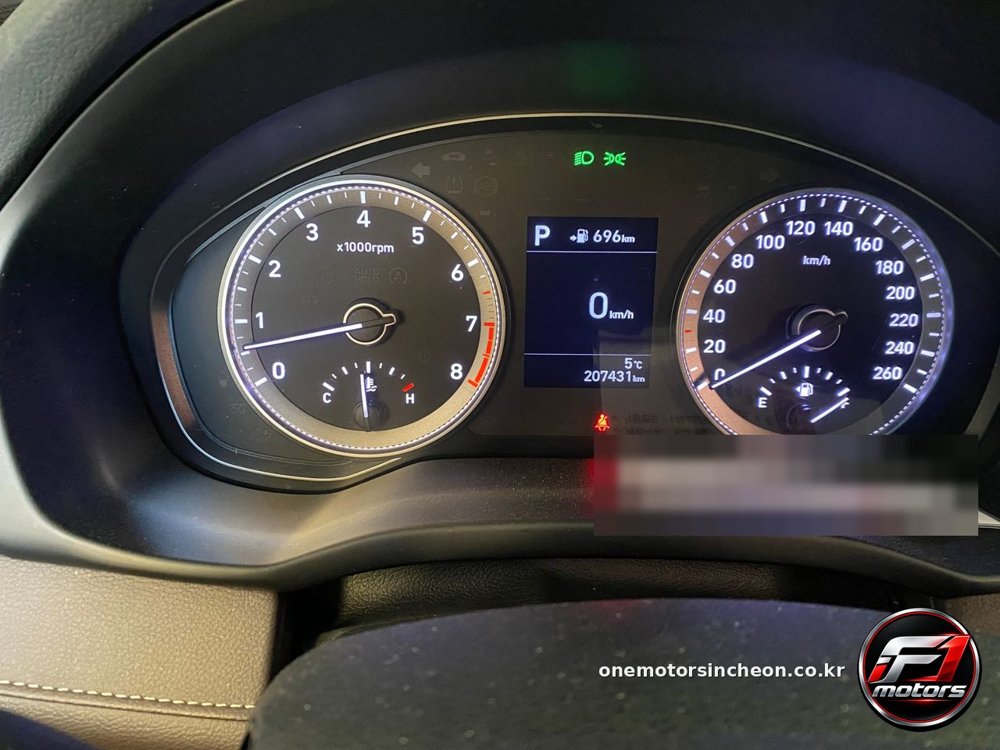
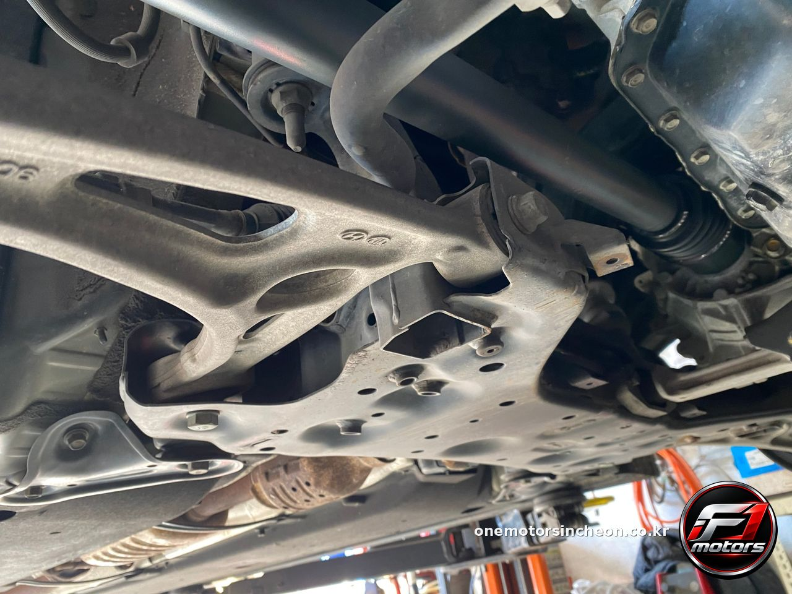
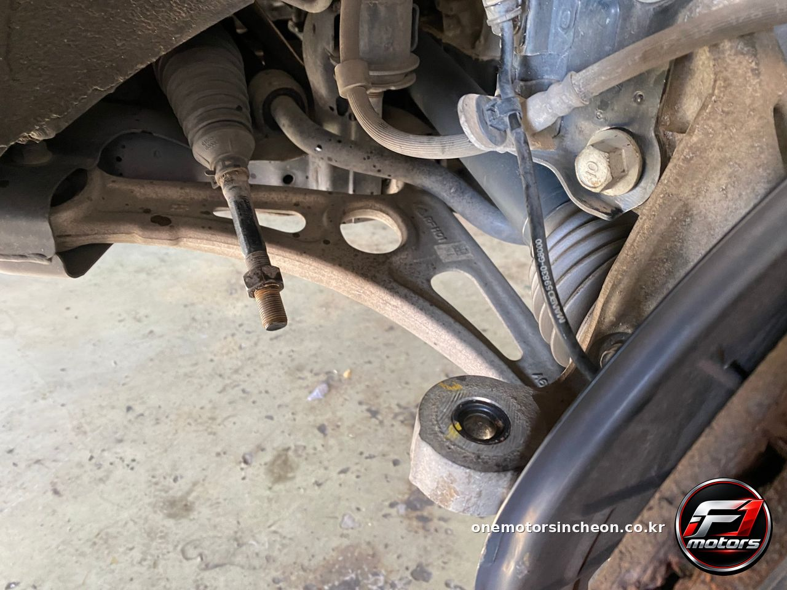
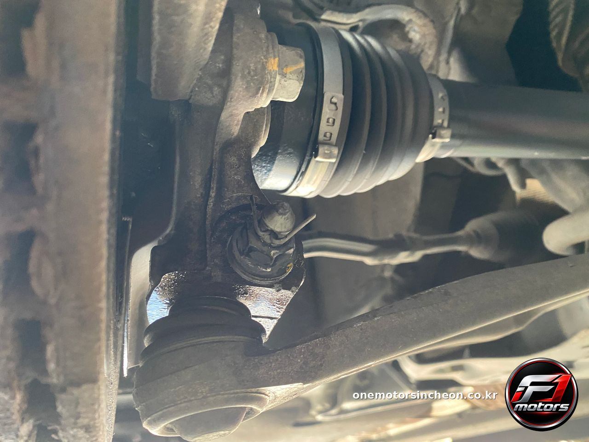
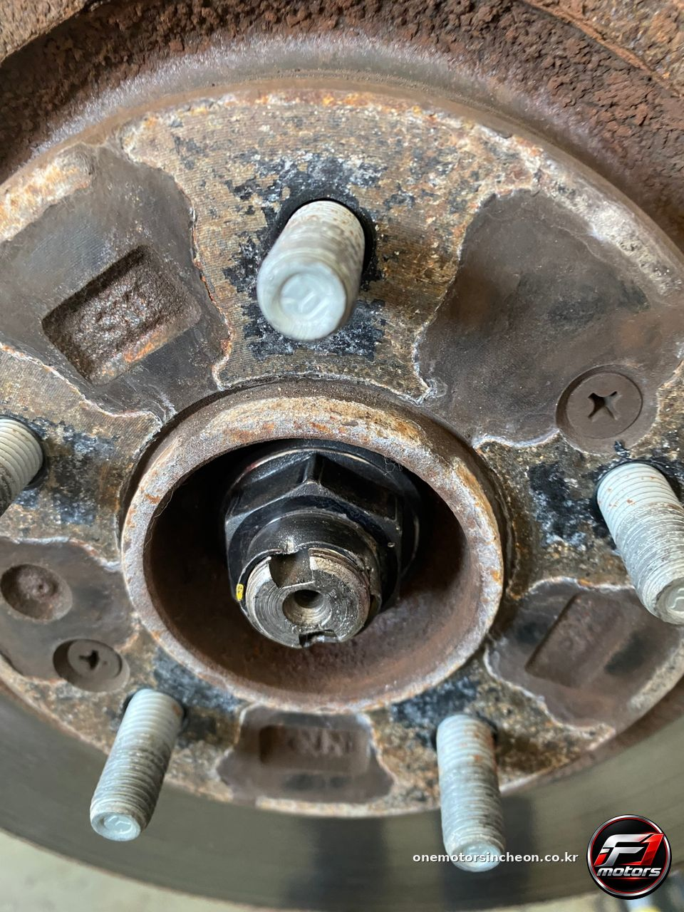
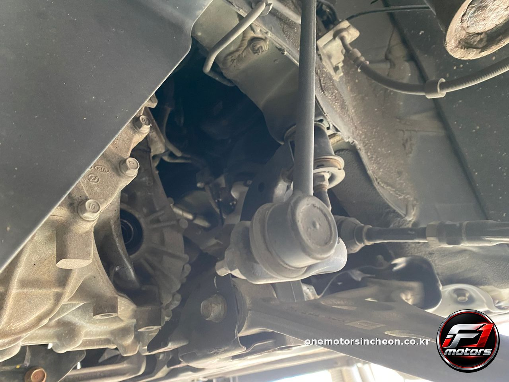
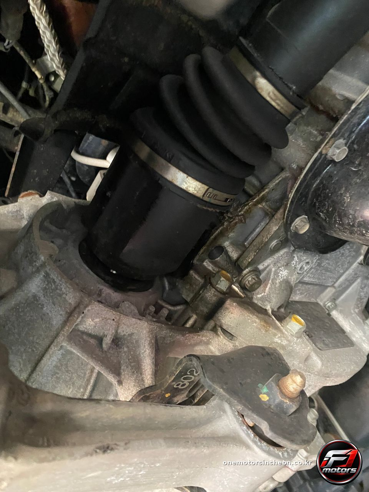
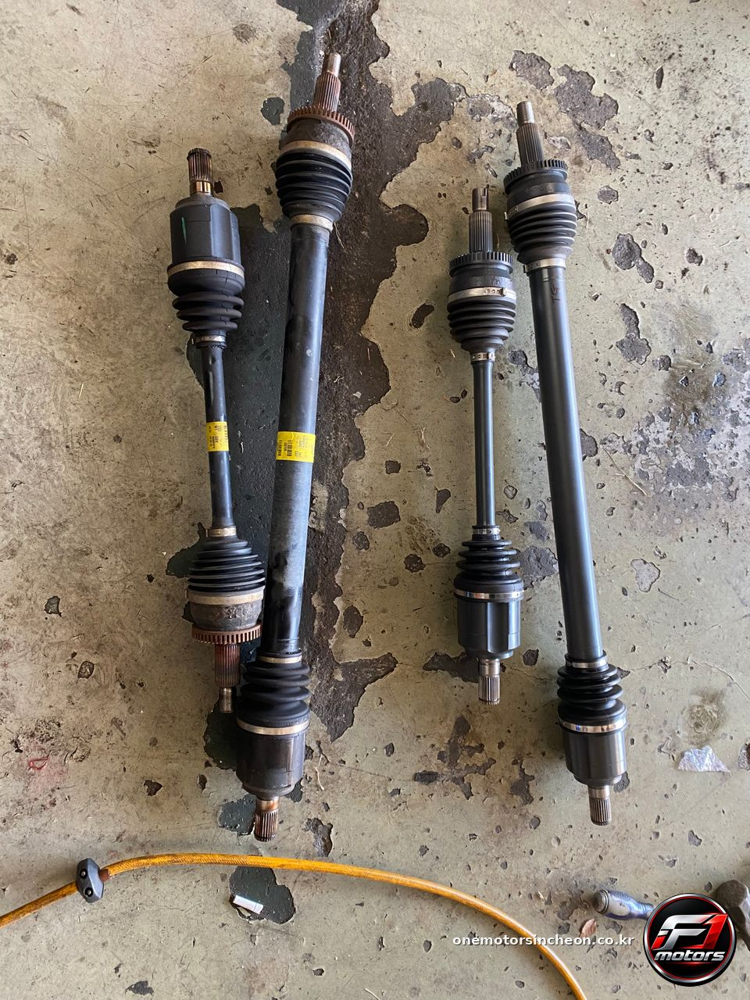
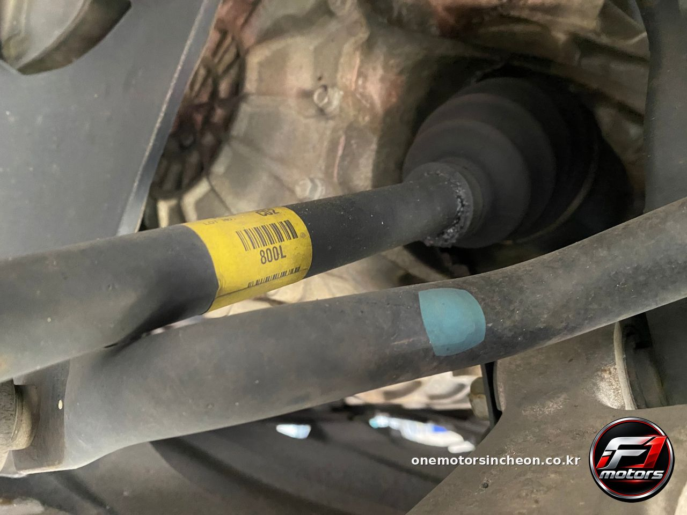
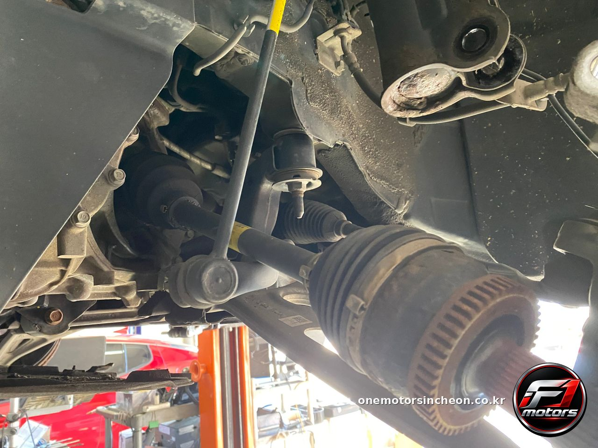
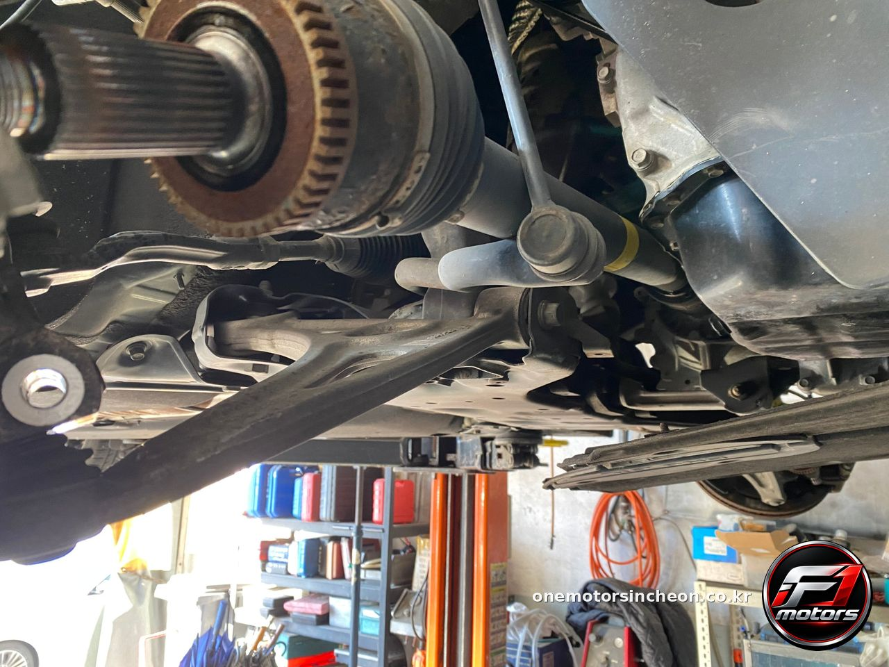
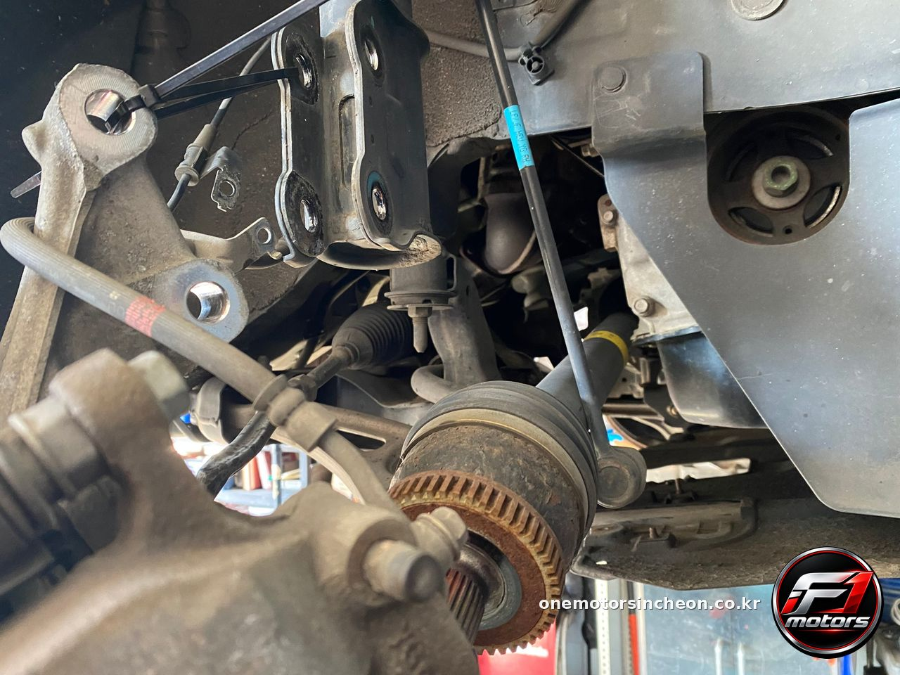
이런 증상으로 찾아오십니다
- 인천 등속조인트 교환
- 인천 등속조인트
- 인천 드라이브샤프트 교환
- 인천 등속 교환 잘하는 곳
- 인천 등속조인트 전문
- 인천 그랜저 정비
- 인천 국산차 하체 정비
- 인천 과주행 차량 하체
- 제물포구 등속조인트 교환
- 인천 송림동 정비
- 인천에프원모터스
- F1모터스
- 그랜저 IG 등속조인트
- 그랜저 등속조인트 교환
- 그랜저 IG 하체 정비
- 그랜저 IG 2.4 가솔린
- 20만km 그랜저
- 과주행 그랜저 하체
- 등속조인트 부트 찢어짐
- 등속 부트 그리스 샘
- 핸들 꺾으면 드드득 소리
- 출발할 때 드득 소리
- 회전할 때 하체 소음
- 주차장에서 핸들 돌리면 소리
- 등속조인트 한쪽만 갈아도 되나요
- 등속조인트 좌우 같이 갈아야 하나요
- 등속조인트 교환 주기
- 20만km 등속조인트
- 등속조인트 수리되나요 교환해야 하나요
- 드라이브샤프트 교환 시간
- 등속 갈고 나서 기름이 떨어져요
- 등속조인트 교환 후 미션오일 누유
- 미션 오일씰
- 드라이브샤프트 뽑을 때 오일씰
- 같은 자리 두 번 열면 공임도 두 번
비슷한 증상이 있으시면 전화로 상담해 주세요. 차종과 연식, 증상만 알려주시면 예상 원인을 안내해 드립니다.
인천에프원모터스는 제조사 공식 서비스센터가 아닌 독립 정비업체입니다. 정비 내용은 차량 상태에 따라 달라질 수 있습니다.